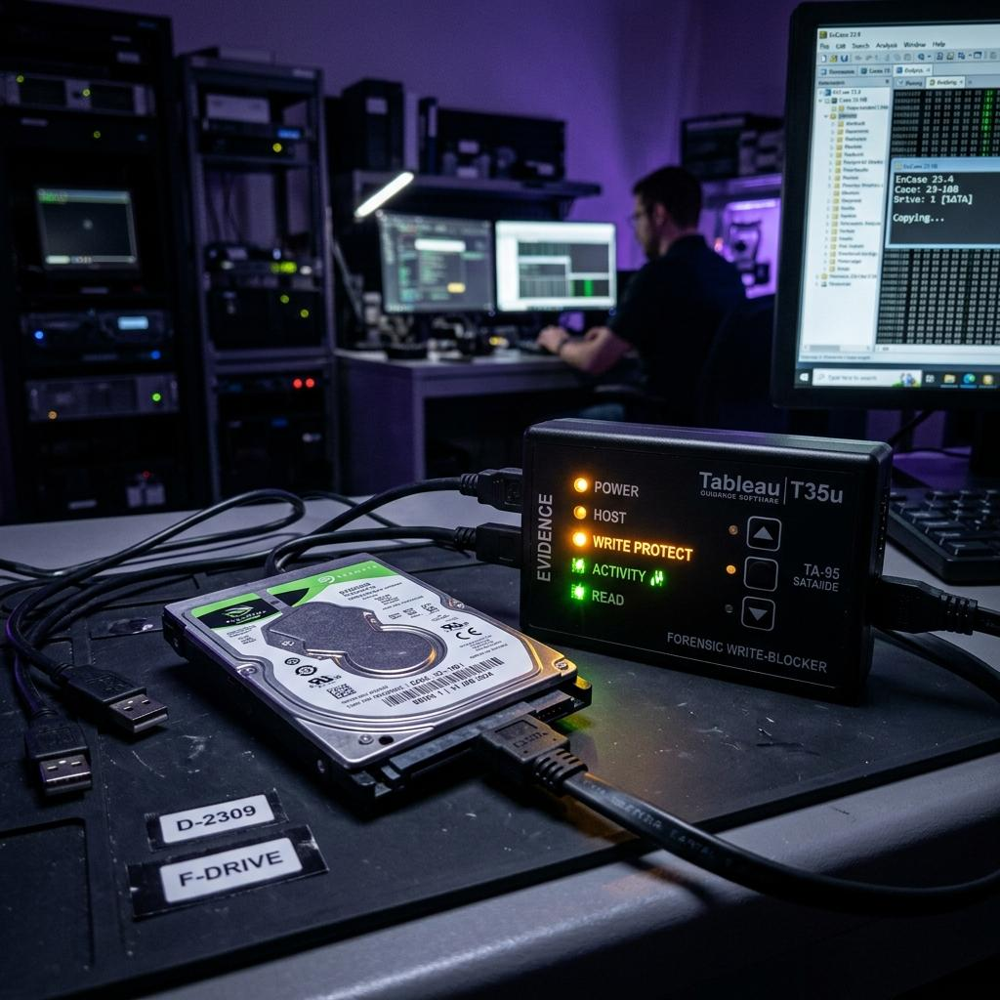
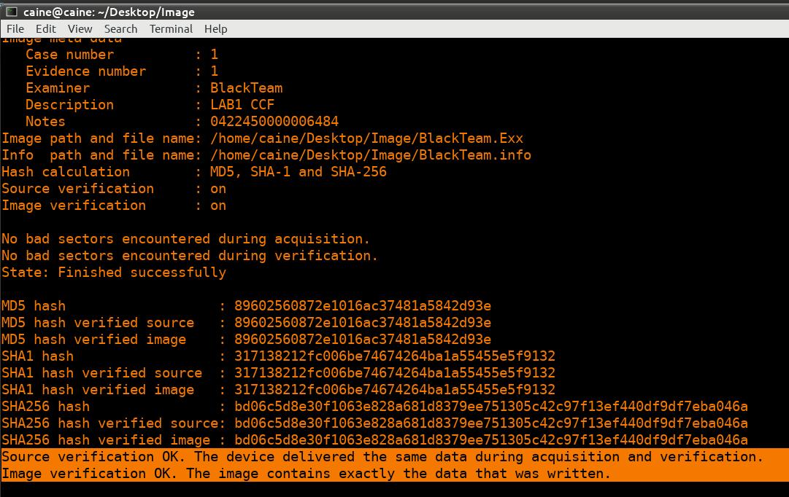
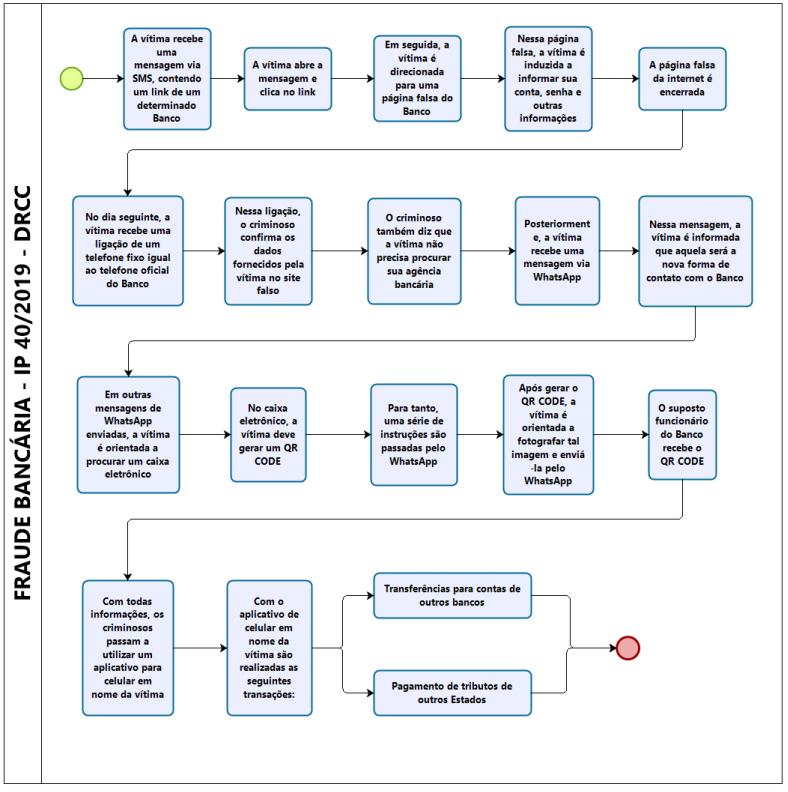
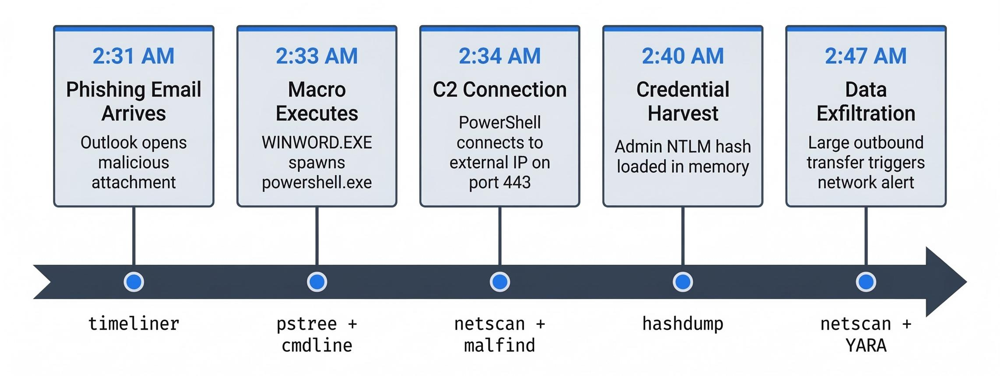

PRESENTASI PROYEK FORENSIK &
SIDANG SEMU (BAGIAN 1)
Mata Kuliah: Forensik Digital | Bobot: 3 SKS | Pengampu: Raden Bagus Dimas Putra, S.Kom, M.Kom
Capaian Pembelajaran (Sub-CPMK 13)
Penyajian Laporan
Menyampaikan hasil BAP dengan runtut, logis, dan berbasis data artefak digital yang valid.
Terjemahan Teknis
Menjelaskan konsep rumit seperti nilai Hash dan Write-Blocker agar mudah dipahami Majelis Hakim.
Keabsahan Bukti
Mempertahankan keutuhan Chain of Custody dari segala bentuk tuduhan kontaminasi atau rekayasa.
Format & Tata Tertib Simulasi Sidang Semu
Pertemuan 13 dirancang sebagai ajang pembuktian hasil investigasi kasus proyek praktikum kelompok 1, 2, dan 3. Ruang laboratorium ditata menyerupai ruang persidangan Pengadilan Negeri.
| Pihak Persidangan | Tugas & Wewenang | Karakter Interaksi |
|---|---|---|
| Majelis Hakim (Dosen PJMK) | Memimpin persidangan, menilai kelayakan alat bukti, dan menguji pemahaman etika penyelidik. | Obyektif, Menguji, Mencari Kebenaran Materil |
| Saksi Ahli (Kelompok Penyaji) | Mempresentasikan temuan BAP, menunjukkan artefak digital, dan membela keaslian hash bukti. | Tenang, Berbasis Data Ilmiah, Lugas |
| Jaksa / Pengacara (Kelompok Penguji) | Mengajukan pertanyaan kritis, mencari celah dalam rantai penanganan bukti, dan memvalidasi SOP. | Kritis, Skeptis, Menuntut Pembuktian |
Sikap & Etika Saksi Ahli di Muka Persidangan
Ahli forensik bersumpah di bawah kitab suci untuk membela fakta ilmiah, bukan memenangkan jaksa maupun membebaskan terdakwa. Obyektivitas adalah harga mati.
Contoh: Jika Hakim bertanya "Apa arti hash SHA-256?", jelaskan bahwa "Nilai hash adalah sidik jari digital 64 digit. Jika 1 huruf dari 1 juta halaman berubah, seluruh sidik jari akan berubah total."
Jika bukti tertentu telah tertimpa (overwritten) secara permanen, katakan sejujurnya tanpa berspekulasi atau mengarang narasi palsu.
Chain of Custody: Rantai Penguasaan Bukti
Evidence Seizure (Penyitaan)
Initial collection, documentation, and secure transport with bag & tag protocol.
Forensic Imaging (Pencitraan Bit-Stream)
Using a hardware write-blocker to prevent any alteration during cloning.
Hashing & Logging
Unique digital fingerprint (MD5/SHA-256) generated, verified, and recorded.
Secure Storage
Maintained in a secure environment with restricted biometric access.

Visualisasi 4 Tahap Rantai Penguasaan Bukti Digital (Chain of Custody)
Hardware Write-Blocker (Tableau T35u)

Tableau T35u Forensic Write-Blocker Connected to Evidence Drive
Pemblokiran Elektronik
Secara fisik dan elektronis memblokir sinyal penulisan (write-block) ke harddisk tersangka agar metadata akses tidak berubah.
Indikator LED Aktif
Lampu LED menyala pada status POWER, HOST, WRITE PROTECT, ACTIVITY, dan READ untuk menjamin transparansi di depan persidangan.
Akuisisi EnCase
Proses pencitraan bit-by-bit dilakukan menggunakan software EnCase untuk menghasilkan file citra (.Exx) yang sah secara hukum.
Verifikasi Nilai Hash (MD5, SHA-1, SHA-256)

Terminal CAINE OS: Verifikasi Hash MD5, SHA-1, dan SHA-256
Sidik Jari Digital 64 Karakter
Nilai hash SHA-256 adalah bukti matematis mutlak di pengadilan. Jika ada perubahan 1 bit data saja pada harddisk, nilai hash akan berubah secara total dan seketika terdeteksi.
Log Output Verifikasi (Status: OK)
Teknik Visualisasi Temuan Bukti Digital

1. Spearphishing SuperTimeline (MACB)

2. Diagram Aliran Komunikasi & Dana

3. Incident Response Timeline
Garis Waktu Insiden (Timeline)
Grafik horizontal memperlihatkan menit demi menit: mulai dari email phishing dibuka, malware PsExec aktif, hingga unallocated space dihapus.
Diagram Komunikasi & Dana
Memetakan pertukaran pesan WhatsApp antar-tersangka beserta korelasi transfer rekening bank dan stempel waktu pengiriman dokumen rahasia.
Mempertahankan Nilai Hash dari Tuduhan Rekayasa
Ilustrasi Saksi Ahli Mempresentasikan Data Timeline di Sidang
"Saudara Ahli, apakah ada kemungkinan penyidik kepolisian sengaja menyalin file atau malware ke laptop klien saya saat proses penyitaan di lokasi kejadian?"
"Secara teknis tidak mungkin, Yang Mulia. Sebelum harddisk diakses, media fisik dihubungkan ke Hardware Write-Blocker Tableau T8u yang secara elektronik memblokir sinyal penulisan. Nilai SHA-256 pre-acquisition yang dihitung saat penyitaan adalah a1b2..., dan nilai hash citra bukti yang dianalisis di lab bernilai 100% identik. Jika ada 1 byte saja data disisipkan, nilai hash tersebut pasti berubah total!"
Rubrik Penilaian Sidang Semu Bagian 1
Kerapian Dokumen BAP
Dokumen tersusun sesuai format resmi, ada nilai hash ganda, dan formulir CoC bertandatangan lengkap.
Kejelasan Presentasi
Mampu menyampaikan temuan dalam 15 menit dengan media visual diagram timeline yang lugas dan runtut.
Argumentasi Teknis
Mampu mempertahankan validitas metode ilmiah saat dihujani pertanyaan sanggahan oleh kelompok lawan.
Kepatuhan Etika Profesi
Menjunjung tinggi obyektivitas, tenang, santun, dan menghormati tata tertib persidangan universitas.
Daftar Pustaka & Standar Rujukan
Bodziak, William J. (2008)
Forensic Science: An Introduction to Scientific and Investigative Techniques. CRC Press.
ISO/IEC 27037:2012
Guidelines for identification, collection, acquisition, and preservation of digital evidence.
Kitab Undang-Undang Hukum Acara Pidana (KUHAP)
Republik Indonesia — Landasan hukum sahnya alat bukti petunjuk dan keterangan ahli di persidangan.
ROBO-PATROL DF-07
"Halo Detektif! Saya Robot Patroli AI UNIQHBA, memindai integritas berkas digital di seluruh portal."
Sidang Semu Bagian 1 Selesai.
Semua kelompok diharapkan menyiapkan berkas BAP final dan lembar Chain of Custody bertandatangan lengkap untuk sesi uji silang berikutnya.